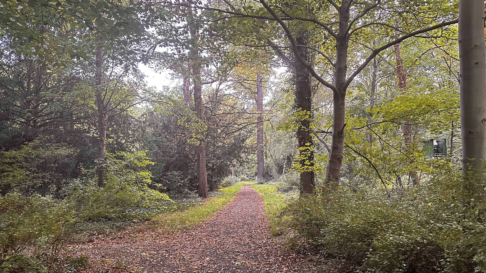

Heiraten & Feiern
Der schönste Tag im UNESCO-Welterbe
Potsdam ist eine der beliebtesten Hochzeitsstädte Deutschlands. Der Park Babelsberg bietet mit seinen
Schlössern, dem Wasserblick und der romantischen Parklandschaft eine einzigartige Kulisse für Ihren großen
Tag.

Schloss Babelsberg
Stil: Märchenschloss, Neogotik
Kapazität: Bis 50 Personen (Standesamt)
Besonderheit: Trauungen im "Tanzsaal" mit Blick auf die Glienicker Brücke.
Standesamt Informationen →

Gastronomie am Wasser
Stil: Rustikal bis Elegant
Kapazität: 20–100 Personen
Besonderheit: Feiern direkt am Ufer (z.B. Matrosenhaus oder nahegelegene
Restaurants).
Gastronomie Guide ansehen →
Freie Trauungen im Park
Für freie Trauungen unter freiem Himmel gibt es im Park Babelsberg ausgewiesene Flächen, die über die
Stiftung Preußische Schlösser und Gärten (SPSG) angefragt werden können. Beliebt ist der Bereich um den
Flatowturm oder die Terrassen am Schloss.
Wichtig: Für alle Veranstaltungen im Park ist eine Genehmigung der SPSG zwingend
erforderlich. Bitte planen Sie mit mindestens 6-12 Monaten Vorlauf.
Fotokulisse
Der Park Babelsberg ist weltberühmt für seine Sichtachsen ("Blicke"). Die beliebtesten Fotospots für
Brautpaare sind:
- Die Goldene Rosentrappe (im Sommer blühend)
- Der Schlossvorplatz mit Brunnen
- Das Havelufer mit Blick auf die Glienicker Brücke